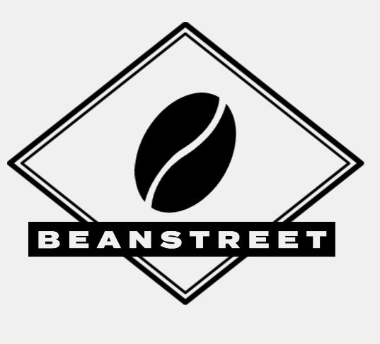

Design |2023.2
架空のカフェ:BeanStreetのWEBサイト

Base deta
制作時間
2日(こちらはコーディングをしていません)
使用ソフト/技術
Figma/Photoshop/illustrator
制作意図
コーヒーを飲むのが好きなので自分好みのカフェを作りたくなり作成しました。
制作過程
01.コンセプト設定
まず初めに、カフェのコンセプトを考えました。
お店によってお客さんにどのように見られたいかが変わってくるので
しっかり把握する必要があります。
- 20代~30代向けのカフェ。
- 名物はコーヒーとサンドウィッチ。
- シックで落ち着いた店内。
- おしゃれな印象を持たせたい。
必要な要素の選定
- Top(ページ上層)
- Menu(コーヒーと軽食)
- Blog(最新情報)
- Contact(お問い合わせ)
この４つに絞りました
02.ワイヤーフレームの作成
03.使用する色・フォントの設定
WEBサイトの構成とデザインが大まかに決まったので、色を決定しました。
落ち着いた様子を表現するために全体はオフホワイト色に近い淡いベージュ色を使用しています。 そこにアクセントとして目玉焼きをイメージした淡いオレンジを使用しています。
フォントはガタガタとしたラフなラインが特徴的なかんじゅくゴシックというものを使用しています。
04.ロゴマークの作成
次にロゴマークの作成に取り掛かりました
高級感を演出するために角がある図形を使用しビンテージ感も出すことにしました。
フォントの選定
フォントの選定のため4つの案で検討しました


フォントは一番WEBサイトの雰囲気に合うと感じたTermina Black(左下)※スマホの方は上から３番目)を使用しています。
05.Figmaでデザインカンプの作成
最後にphotoshopでモックアップの作成
苦労した点
スペースの確保やユーザーがどこまでの人なら視認できるのかを試行錯誤しました。他にもフォントの選定、ロゴマークなど一括でやることの大変さを知りました。
まとめ
WEBデザインは数をこなせばこなすほど上達すると感じているのでどんどん作っていきたいと思います。
これからもデザインに関する学習を邁進していこうと考えています。
次の制作も頑張ります。
CONTACT
お問い合わせは、
メールにてお願いいたします。